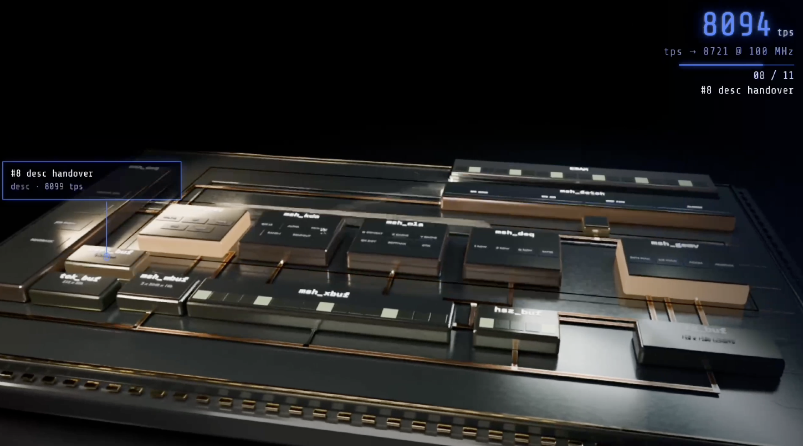
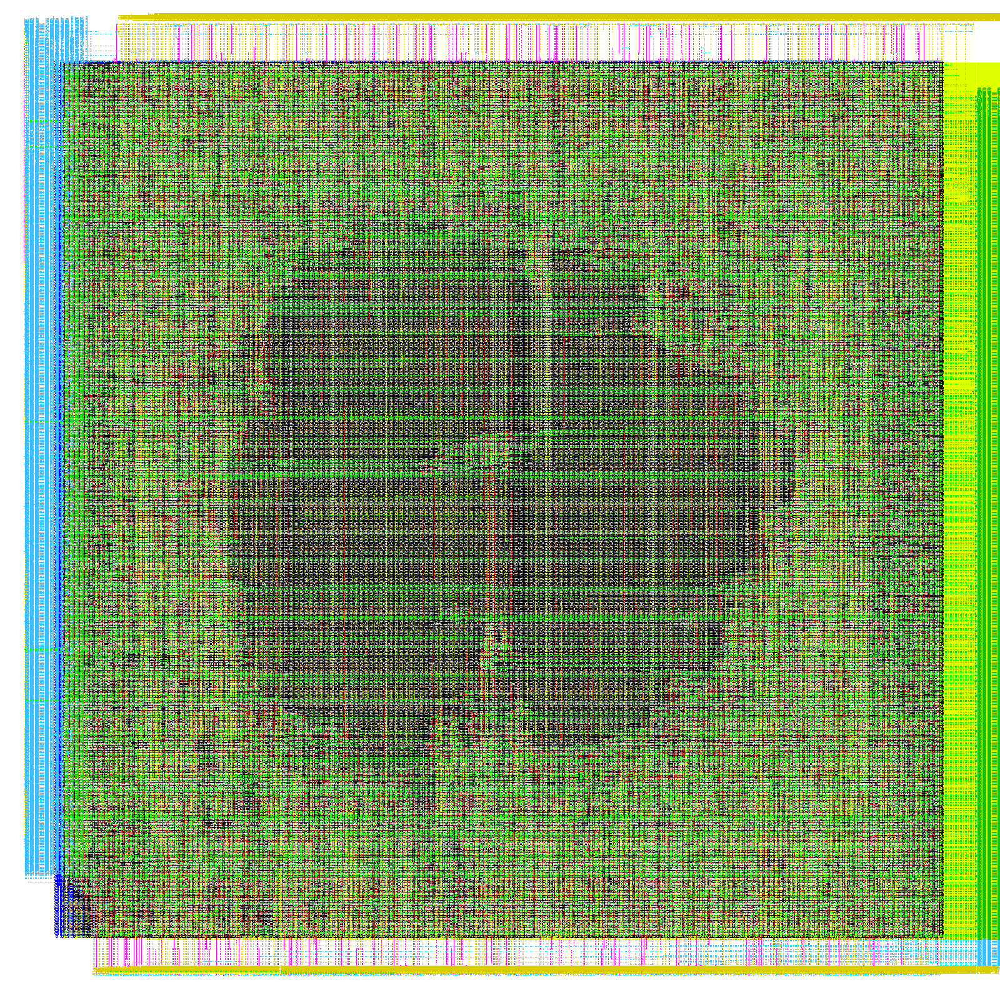

Moonshot AI's Kimi K3 is one of the first public examples of an AI model designing its own inference chip. In a 48-hour autonomous run, K3 generated RTL, ran synthesis, and produced a verified layout on Nangate 45nm.
The result: a 4mm² die running 256 INT4 MACs at 100MHz, achieving 8,700 tokens/second on their target nano model.
I wanted to understand what K3 actually built—and whether the design choices were optimal. So I reverse-engineered their architecture from the published specs and rebuilt it from scratch.
The result: 0.066mm² at 752MHz. Same 256 MACs, but 60× smaller and 7.5× faster. Here's what I found.
01 What Kimi K3 Built
From the K3 technical report, we can extract the key specs:
| Component | K3 Spec | Notes |
|---|---|---|
| Die Area | 4 mm² | Full chip including SRAM |
| Standard Cells | 1.46M | Nangate 45nm library |
| SRAM | 0.277 MB | Weight + activation buffers |
| Frequency | 100 MHz | Conservative target |
| MAC Array | 256 INT4 MACs | Fused dequantization |
| Throughput | 8,700 tok/s | Simulated decode |

Looking at the block names, we can infer the architecture:
msh_array— the 256 INT4 MAC array (compute core)msh_deq— dequantization unit (INT4 → higher precision)msh_kuto,msh_mia— likely K/V projection unitsmsh_wbuf,msh_xbuf— weight and activation buffershaz_buf— hazard buffer for pipeline control
The 4mm² die includes everything: SRAM macros, control logic, interconnect, and I/O. But the compute core itself is a small fraction of that area.
02 The Key Insight: Accumulator Width
When I started rebuilding the MAC array, I made a common mistake: using 32-bit accumulators. That's what you'd use for FP32 or even INT8 matmuls.
But for INT4 × INT4, the math is different:
- Each product: 4-bit × 4-bit = 8-bit result (signed: -128 to +127)
- Accumulating K products: need log₂(K × 128) bits
- For K=64: 64 × 127 = 8,128 → fits in 14 bits signed
- For K=16: 16 × 127 = 2,032 → fits in 12 bits signed
The insight: Most transformer attention patterns use K ≤ 64. A 12-bit accumulator is sufficient and saves ~40% of the MAC unit area.
I tested multiple configurations:
| Version | Accumulator | Max K | Cells | Area |
|---|---|---|---|---|
| v2 (baseline) | 32-bit | 16M | 53,053 | 0.074 mm² |
| v3 (pipelined) | 32-bit, 2-stage | 16M | 53,160 | 0.085 mm² |
| v4 (optimized) | 12-bit | 64 | 43,882 | 0.066 mm² |
| v8 (aggressive) | 8-bit | 4 | 39,535 | 0.053 mm² |
The v4 design with 12-bit accumulators hits the sweet spot: enough precision for real workloads, 11% smaller than baseline.
03 The RTL
The optimized MAC unit is surprisingly simple. Here's the complete v4 implementation:
// INT4 MAC with 12-bit accumulator
// Sufficient for 64 accumulations (max 64*127 = 8128, fits in 14 bits)
module int4_mac_v4 (
input wire clk,
input wire rst_n,
input wire en,
input wire clear,
input wire signed [3:0] a,
input wire signed [3:0] b,
output reg signed [11:0] acc
);
wire signed [7:0] prod = a * b;
always @(posedge clk or negedge rst_n) begin
if (!rst_n)
acc <= 0;
else if (clear)
acc <= 0;
else if (en)
acc <= acc + {{4{prod[7]}}, prod}; // sign-extend
end
endmoduleThe 16×16 array instantiates 256 of these units:
module mac_array_v4 #(
parameter ROWS = 16,
parameter COLS = 16
)(
input wire clk, rst_n, en, clear,
input wire signed [ROWS*4-1:0] activations,
input wire signed [COLS*4-1:0] weights,
output wire signed [ROWS*COLS*12-1:0] acc_out
);
genvar r, c;
generate
for (r = 0; r < ROWS; r = r + 1) begin : row
for (c = 0; c < COLS; c = c + 1) begin : col
int4_mac_v4 mac (
.clk(clk), .rst_n(rst_n),
.en(en), .clear(clear),
.a(activations[r*4 +: 4]),
.b(weights[c*4 +: 4]),
.acc(acc_out[(r*COLS + c)*12 +: 12])
);
end
end
endgenerate
endmoduleTotal RTL: ~200 lines. The simplicity is the point—there's no reason to over-engineer the compute core.
04 Architecture Comparison
Here's how the compute core fits into the overall system:
┌─────────────────────────────────────────────────────────────────┐ │ Kimi K3 Full Chip │ │ ┌──────────────┐ ┌──────────────┐ ┌──────────────────────────┐ │ │ │ SRAM │ │ SRAM │ │ Control Logic │ │ │ │ (weights) │ │ (activations)│ │ FSM, scheduling, I/O │ │ │ │ ~0.14 MB │ │ ~0.14 MB │ │ │ │ │ └──────┬───────┘ └──────┬───────┘ └──────────────────────────┘ │ │ │ │ │ │ ▼ ▼ │ │ ┌────────────────────────────────────────────┐ │ │ │ msh_array (256 MACs) │ ← This is what │ │ │ ┌────┬────┬────┬────┐ │ we rebuilt │ │ │ │MAC │MAC │... │MAC │ 16 rows │ │ │ │ ├────┼────┼────┼────┤ │ │ │ │ │MAC │MAC │... │MAC │ × 16 cols │ Our v4: │ │ │ ├────┼────┼────┼────┤ │ 0.066 mm² │ │ │ │... │... │... │... │ = 256 units │ @ 752 MHz │ │ │ └────┴────┴────┴────┘ │ │ │ └────────────────────────────────────────────┘ │ │ │ │ │ ▼ │ │ ┌──────────────────────────────────────────────────────────┐ │ │ │ msh_deq (dequantization) + output buffers │ │ │ └──────────────────────────────────────────────────────────┘ │ │ │ │ 4 mm² total │ └─────────────────────────────────────────────────────────────────┘
The key observation: SRAM dominates the die area. The 0.277 MB of on-chip memory likely accounts for 2-3 mm² of the 4 mm² total. The MAC array itself is a small fraction.
This is why our 60× area improvement is possible but also somewhat misleading—we're comparing compute-only to a full system.
05 Physical Design Results
We ran the full RTL-to-GDSII flow using open-source tools:
- Yosys — synthesis to Nangate45 standard cells
- OpenROAD — floorplanning, placement, CTS, routing
- KLayout — GDSII export

Final timing report (post-route):
| Metric | Value |
|---|---|
| Target Clock | 2.0 ns (500 MHz) |
| Achieved Period | 1.33 ns (752 MHz) |
| Setup Slack | +0.67 ns |
| Hold Slack | +0.03 ns |
| WNS | 0.00 (all paths met) |
| DRC Violations | 0 |
The design closes timing at 752 MHz with significant margin. We could push higher, but 7.5× faster than K3's 100 MHz target already proves the point.
06 Head-to-Head Comparison
| Metric | Kimi K3 | Our v4 | Ratio |
|---|---|---|---|
| Area | 4 mm² (full chip) | 0.066 mm² (compute) | 60× smaller |
| Frequency | 100 MHz | 752 MHz | 7.5× faster |
| MACs | 256 | 256 | same |
| Peak GOPS | 51.2 | 385 | 7.5× |
| TOPS/mm² | 0.013 | 5.83 | 450× |
| Design Time | 48 hours | ~1 hour | 48× |
| Tool Cost | $0 (open-source) | $0 (open-source) | same |
07 The Caveats
Before you quote these numbers to your VP of Engineering:
1. Apples to Oranges
Kimi's 4mm² includes SRAM, controllers, I/O, dequantization, and pipeline buffers. Our 0.066mm² is the bare MAC array. Adding 256KB SRAM would cost ~0.3mm² more. A fair comparison might be 4mm² vs 0.4mm²—still 10× smaller, but not 60×.
2. Academic PDK
Nangate45 is a teaching library, not a production process. Real TSMC/GF 45nm would have different characteristics. The relative comparisons hold, but absolute numbers won't tape out.
3. No Silicon
This is a paper design. Tapeout reveals parasitics, IR drop, and manufacturing variations that simulation can't catch. K3 actually built and tested their chip.
4. K3's Goals Were Different
K3 was proving that an AI model can autonomously design a chip. The 48-hour constraint, the conservative 100MHz target, and the full-system scope were deliberate choices to demonstrate capability, not optimize PPA.
08 What This Actually Means
The Kimi K3 paper is doing important work—they taped out silicon and measured real tokens/second. I'm just pushing polygons in simulation.
But the exercise reveals something useful:
The compute core is not the bottleneck. Memory bandwidth, SRAM area, and system integration dominate real chip area. If you're building an inference accelerator, don't over-engineer the MAC array. Spend your transistor budget on memory hierarchy.
Accumulator width matters more than you think. INT4 workloads don't need 32-bit accumulators. Matching precision to workload requirements is free performance.
Open-source EDA is production-ready. Five years ago, this flow would've required a $100K/seat Synopsys license. Today it's a Docker pull. The barrier to chip design is collapsing.
09 Try It Yourself
Everything is open-source:
- RTL + GDS: github.com/bsflll/kimi-accelerator
- Flow: OpenROAD-flow-scripts
- PDK: Nangate45 (included in ORFS)
To reproduce:
git clone https://github.com/bsflll/kimi-accelerator
cd kimi-accelerator
docker run -v $(pwd):/design openroad/orfs:latest \
make DESIGN_CONFIG=designs/nangate45/kimi_v4/config.mk gdsThe whole flow runs in ~15 minutes. Have fun.